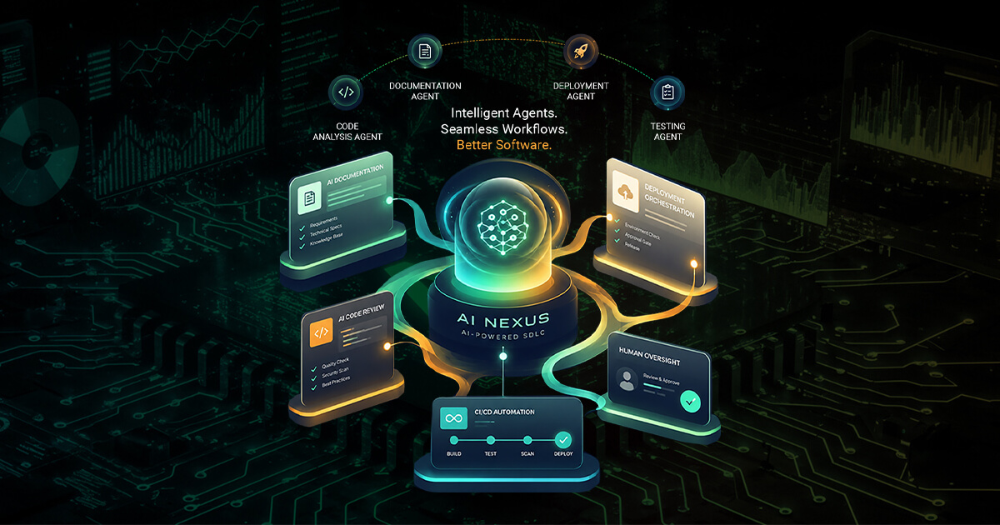

CI/CD optimization for infrastructure software
Elinext improved Jenkins-based delivery for a global infrastructure software provider, cutting development time and keeping quality controls.
Read the case studyJRD AI Nexus already covers documentation, code review, build management, and deployment. The next constraint is proving the workflow at production pace.
Why we're here: Saw JRD hiring a Full Stack Software Engineer for scalable web apps, UI patterns, CI/CD, GitHub, security scans, and QA work. That points to real delivery load.

The Full Stack Engineer role points to delivery pressure, not generic hiring. It names Web API, React, C#/Java, SQL, GitHub controls, security scans, and CI/CD. That matches JRD AI Nexus, which spans documentation, code review, builds, and deployment. The hard part is one standard across client work, product work, and AI-assisted SDLC flows. If that slips, demos look strong while teams still carry manual checks.
AI Nexus names LangGraph, GitHub Actions, VS Code, and AWS. The page needs one thin pilot path from pull request to deploy.
Turn one workflow into a measured GitHub-to-deploy reference path before adding more agents. Fix the public AI pages before buyer traffic grows.
A dedicated squad works under your PO or PM, with weekly demos and one shared delivery board.
Map the workflowMap the AI Nexus GitHub-to-deploy journey, including code review, security scan, build checks, and human approval points.
Build the reference pathBuild a reference workflow using React, Node.js or .NET services, GitHub Actions, SonarQube, and AWS deployment checks.
Automate release checksAdd automated regression and smoke tests for the AI-Enabled QA Framework and public product pages, so releases show readiness.
Tune buyer pagesTune the product pages by removing render blockers, sizing media, and checking mobile layout before campaigns.
Hand off the playbookHand over a simple playbook so JRD engineers can repeat the workflow across client projects.
Elinext is a full-cycle software development provider, active since 1997, with about 700 in-house specialists and no freelancers. For this work, the fit is our dedicated team model, senior web engineers, QA automation, DevOps, and AI/ML skills. We work under ISO 9001 and ISO 27001, which matters when AI touches code, build data, and delivery controls. Named customers include Siemens, Broadcom, Volkswagen, TRUMPF, and TUI. That base lets us help JRD add capacity while keeping the delivery standard clear and repeatable.
Elinext improved Jenkins-based delivery for a global infrastructure software provider, cutting development time and keeping quality controls.
Read the case study
Elinext built TestTrack to centralize QA work, support AI case generation, and show release readiness in one place.
Read the case study